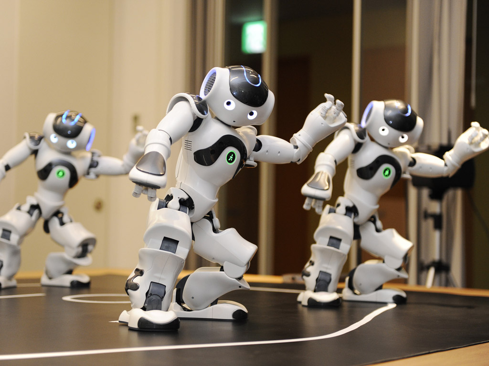
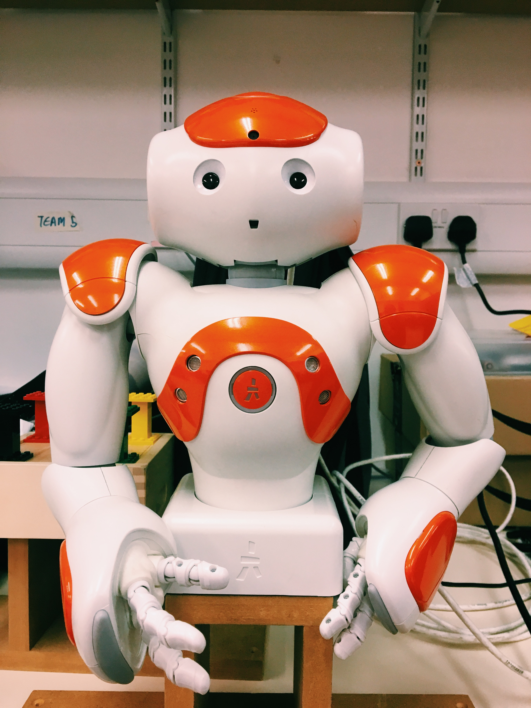

机器人递交合作中用户情感研究
原名：The Media Equation Test for Robot in Turn-Taking Handover Coordination
为个人研究生毕业项目，试图发现人与机器人交互过程中，用户对待机器人的情感如何，以及对机器人的期待如何。

现阶段机器人外形设计趋向于人形，其主要目的在于从视觉上拉进人与机器人的距离。1996年，里夫斯和纳斯（Reeves and Nass）曾做过一系列实验，得出结论：人对待电脑如同对待人一样，这便是媒体方程式测试（The midia equation test）。但同时，也有恐怖谷理论发现当机器人外表趋近与人类的时候，人类会对机器人产生极度恐惧和厌恶。所以用户在人机合作中，是如何看待机器人的？为此进行了实验研究。
文献检索
在项目实验前，进行一系列文献检索，以获取相关知识点，如人-机器人递交合作实验中，人与机器人如何能更好的完成递交，媒体方程式测试( The media equation test )，恐怖谷理论等。 在了解了相关知识点之后，设计了一套实验以试图进行问题解答。实验准备
1. 实验设计
实验分为三个部分：- 机器人进行一系列动作，待动作结束后，让用户猜测机器人在做什么。
- 让用户根据所给情景给机器人下达命令，让机器人识别目标并递交到用户手上。
- 让用户根据情景给机器人下达命令，但是并不让机器人完成用户目标。
实验使用方法
- 观察法(Observation)
- 微软产品反应卡片 (Microsoft reaction card method)
- 情景访谈 (Contextual Inquiry)
2. 实验准备
确定了实验内容后，进行实验前准备。此项目中是要求机器人满足合作条件。实验使用的为Aldebarn Robotics的NAO T14半身机器人。在进行实验之前，用python2.7编程，使机器人有能力和条件与人进行递交合作（handover cooperation）。
